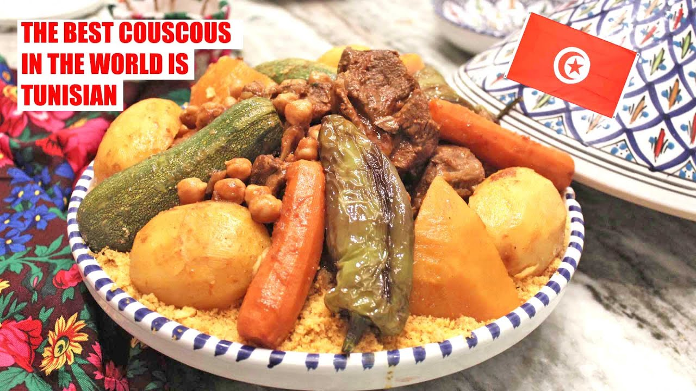

Tunisian Couscous

Description
Couscous (Arabic: كُسْكُس, romanized: kuskus; Berber languages: ⵙⴽⵙⵓ, romanized: seksu) sometimes called kusksi or kseksu is a traditional North African dishes of small steamed granules of rolled semolina that is often served with a stew spooned on top. Pearl millet, sorghum, bulgur, and other cereals are sometimes cooked in a similar way in other regions, and the resulting dishes are also sometimes called couscous.
Couscous is a staple food throughout the Maghrebi cuisines of Algeria, Tunisia, Mauritania, Morocco, and Libya. It was integrated into French and European cuisine at the beginning of the twentieth century, through the French colonial empire and the Pieds-Noirs of Algeria.
In 2020, couscous was added to UNESCO's Intangible Cultural Heritage list.
Ingredients
- 500 g couscous
- 6 tablespoon olive oil (alternatively sunflower oil)
- 1 tablespoon tomato paste
- 1 teaspoon harissa
- 3 onion (s)
- 500 g meat your choice, lamb, beef or poultry, in bite-sized pieces
- 3 clove (s) garlic
- 2 potato (s)
- 2 carrot (s)
- 1 zucchini
- some pumpkin meat, optional
- 200 g chickpeas, pre-cooked
- 0.5 teaspoon ½ paprika powder
- 1 teaspoon, heaped salt
- 0.5 teaspoon ½ coriander powder
- 0.5 teaspoon ½ pepper
- 7 cup water
Steps
- In a cooking pot over medium-low heat, add the olive oil and allow it to get hot. Then add the onions and garlic and seer for 3-5 minutes or until the onions are translucent in color.
- Then, add the beef fondue, paprika, ground coriander, ground turmeric, salt, pepper, and ground ginger. Seer the beef for 3-5 minutes to brown the sides of the meat.
- Afterward, add all the vegetables, and tomato paste and pour boiling water into the cooking pot until all the vegetables are covered in water. Next, cover the cooking pot with the lid and allow the pot to simmer over medium-low heat for 15 minutes.
- Now check the doneness of the vegetable. You can do this by inserting a fork into each vegetable. If the fork easily slides through the vegetable, it means it is cooked. Remove any cooked vegetables and set them aside for later.
- Then, cook the meat for another 15 minutes and recheck the remaining vegetables. Remove any cooked vegetables, add the chickpeas and cook the meat for another 15 minutes with the lid on.
- Once the meat is cooked, separate the meat and chickpeas from the chicken broth and set them aside for assembling.